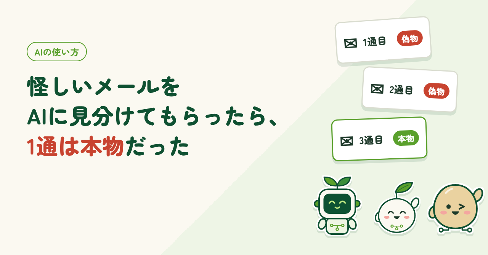
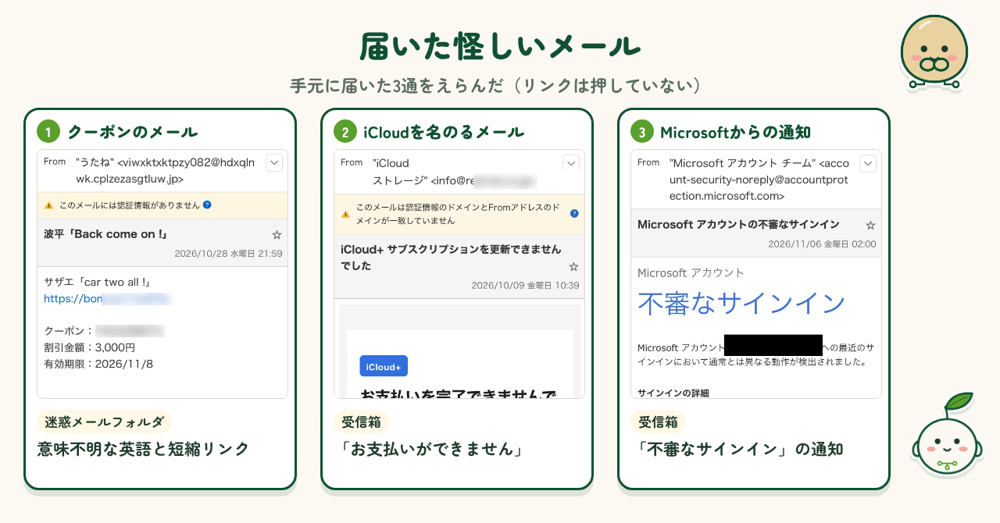
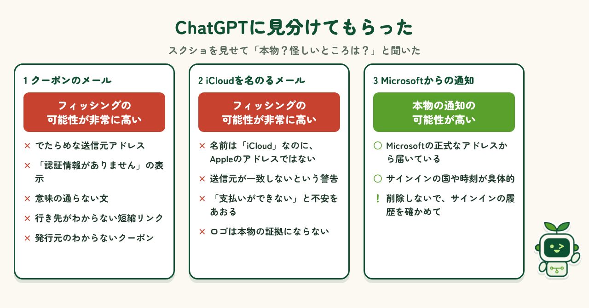
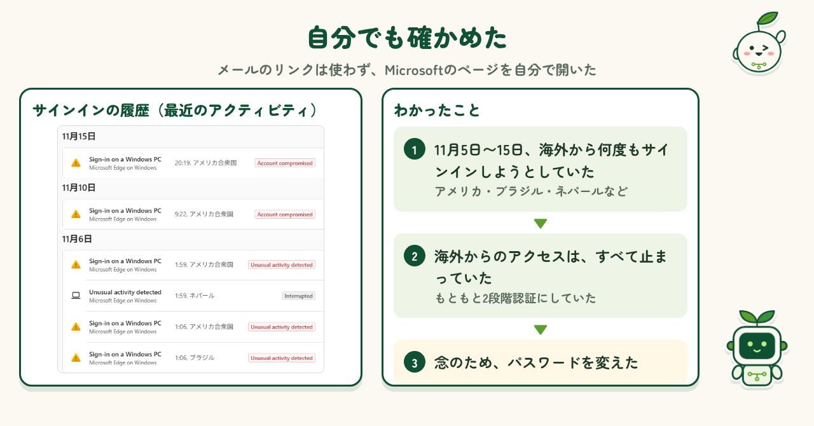
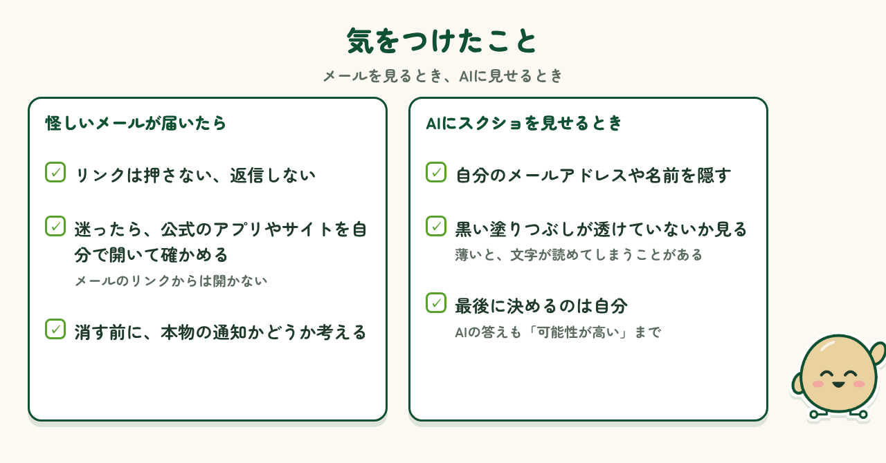

2026.11.23 公開
怪しいメールをAIに見分けてもらったら、1通は本物だった
届いた怪しいメール3通を、ChatGPTに見分けてもらいました。結果は、偽物2通と、本物が1通でした。

はじめに
最近、有名なサービスや会社を名のる、怪しいメールがよく届きます。迷惑メールフォルダに入るものもあれば、受信箱に届くものもあり、本物か偽物か迷うことがあります。そこで今回は、手元に届いたメールを3通えらんで、ChatGPTに見分けてもらいました。メールの中のリンクは押さずに、画面のスクショだけを見せています。
届いた怪しいメール
1通目は、迷惑メールフォルダに入っていたクーポンのメールです。意味の通らない英語の文と、短縮されたリンクが書かれていました。わかりやすい例で、今どきこんなメールに引っかかる人がいるのだろうかと思いました。2通目は「iCloud+の支払いができなかった」というメール、3通目は「Microsoftアカウントに不審なサインインがあった」というメールです。

ChatGPTに見分けてもらった
ChatGPTの答えは、1通目と2通目は「フィッシングの可能性が非常に高い」でした。1通目は、でたらめな送信元アドレスや、発行元のわからないクーポンなど、怪しい点を5つ挙げてくれました。2通目は、名前は「iCloud」なのに、アドレスはAppleのものではないと指摘。実際に契約している人なら「えっ？」とあせりそうです。ところが3通目は「本物の通知の可能性が高いので、削除しないで」という答えでした。

自分でも確かめた
ChatGPTのすすめにしたがって、メールのリンクは使わずに、Microsoftのページを自分で開いて、サインインの履歴を確認しました。すると、11月5日から15日にかけて、アメリカやブラジル、ネパールから、何度もサインインしようとした形跡がありました。もともと2段階認証にしていたので、海外からのアクセスはすべて止まっていましたが、念のためパスワードを変えました。

気をつけたこと
今回あらためて、気をつけたいと思ったことがあります。まず、怪しいメールのリンクは押さず、返信もしないこと。本物か迷ったときは、メールからではなく、公式のアプリやサイトを自分で開いて確かめること。そして、AIにスクショを見せるときは、自分のメールアドレスなどを隠すことです。黒く塗ったつもりでも、薄く透けて読めてしまうことがあるので注意が必要です。

まとめ
AIは、怪しいメールを見分けるのに、とても頼りになりました。怪しい点を一つずつ説明してくれるので、なぜ偽物なのかがよくわかります。一番の収穫は、3通目が本物の通知だとわかり、実際にねらわれていたことに気づけたことです。2段階認証にしておいて、本当によかったと思いました。怪しいメールが届いたら、消す前に一度AIに聞いてみるのもおすすめです。
制作メモ
段落の構成と文章の下書きはAI（Claude）と作り、各段落に自分の感想を入れて、1段落ずつ確認・修正しました。図もAIと一緒に作っています。